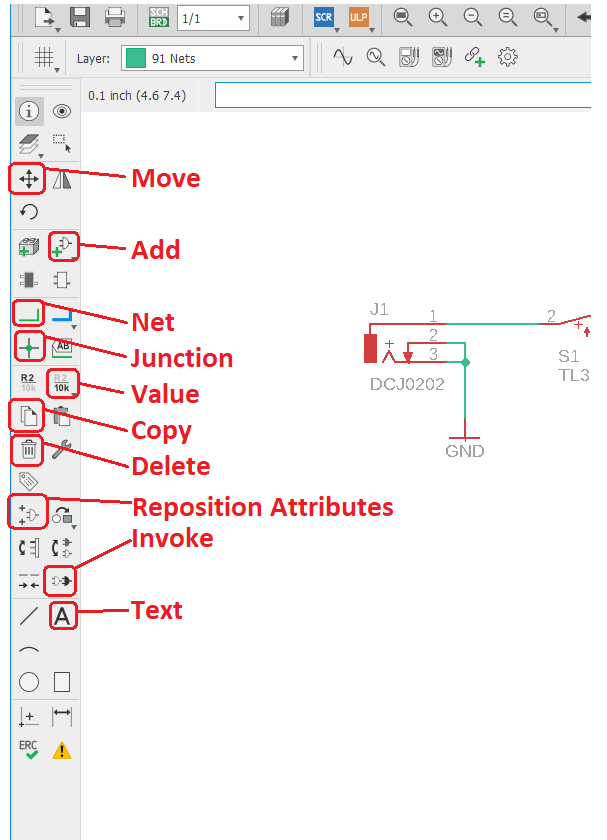
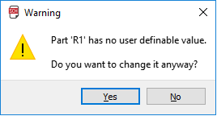
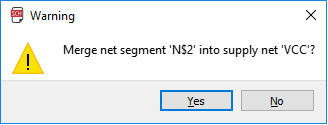
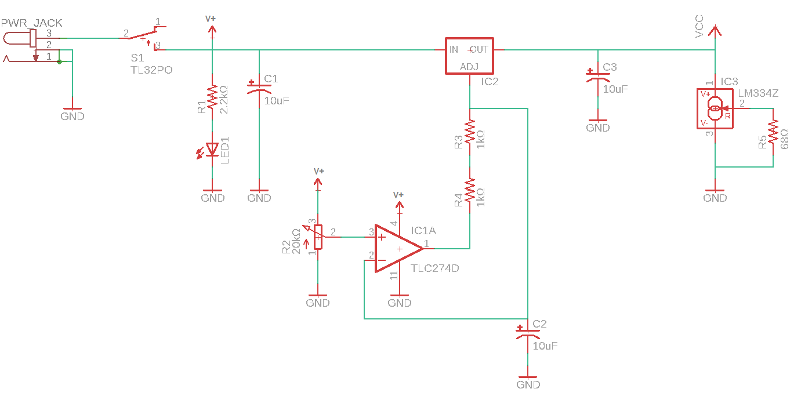
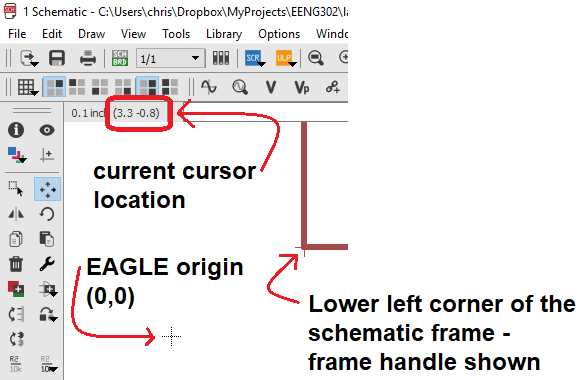
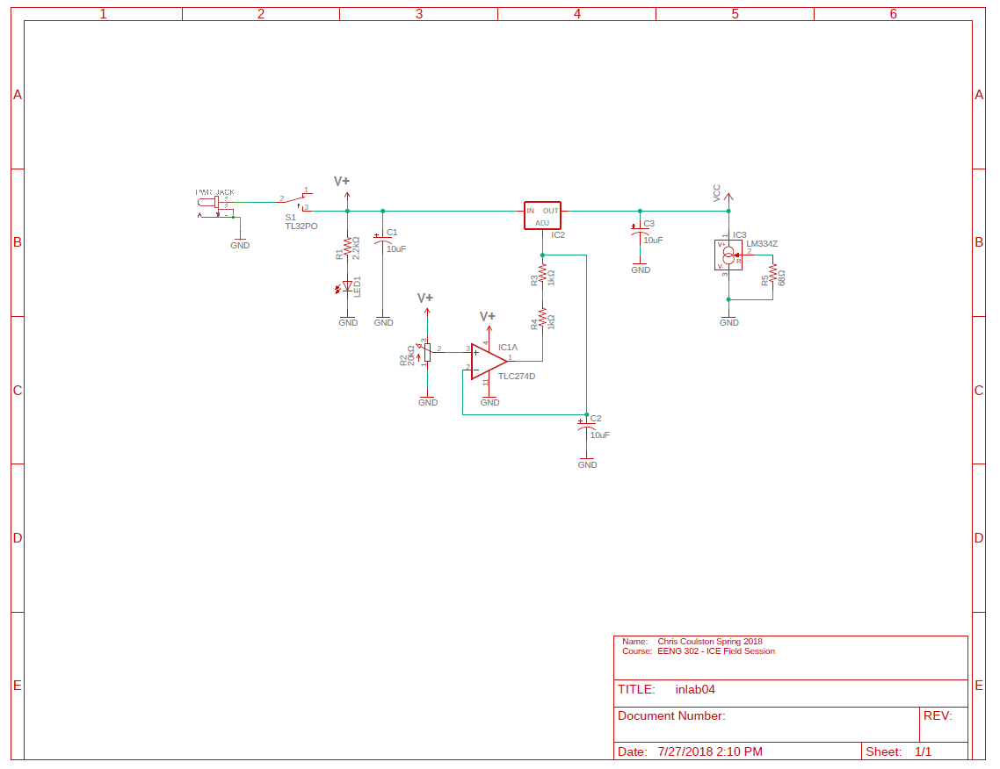

EENG 302
In Lab 2 - EAGLE schematic and MOSFETRequirements
Working in teams of two, read through the following lab activity and perform all the actions prescribed. You do not need to document bullet items. Make a record of your response to numbered items and turn them in a single copy as your teams "inLab" assignment at the start of next weeks class. Word process your solutions. Include the names of both team members at the top of your solutions. Use complete English sentences when answering questions. If the answer to a question is a table or other piece of art (like an oscilloscope trace or a figure), then include a sentence explaining the piece of art. Only include your answers, do not include the question-text unless it is absolutely needed.Initial prototype
In this lab you are going to put together the core functionality of your component tester. This will consist of a voltage regulator and the main power switch that will apply the stimulus to the DUT. Before you start, please go throughCreating a schematic in EAGLE
Software install
Create a project directoryCreate an autodesk account
Download and install EAGLE
Download and install SparkFun Eagle library
- Goto
- Click on the green "Clone or download" button,
- Select the "Download ZIP option,
- Goto the download directory on your machine,
- Right mouse click on the "SparkFun-Eagle-Libraries-master" zip file and select "Extra All" in the download folder,
- Move the "SparkFun-Eagle-Libraries-master" folder (the inner-most one) to the root EENG302 directory,
- Launch EAGLE
- Right mouse click on the "Libraries" folder and select "Open Library Manager",
- In the Library Manger pop-up, select "Browse",
- Navigate to your project director and into the "SparkFun-Eagle-Libraries-master" directory,
- Select the first lbr file "LilyPad-Wearables" and then scroll down to the last lbr filea"User-Submitted" and hold the shift key while left mouse clicking to select all the lbr files in the SparkFun Eagle library,
- Click "Open",
- You should see a message indicateing that all the libraries have been added (there were 31 at last count).
Schematic Capture with Eagle
Create a new project and schematic
- Launch EAGLE ,
- Click Options -> Directories…,
- In the Directories pop-up, in Project add C:\Users\chris\Dropbox\MyProjects; Click OK when done,
- In the Control Panel, open the Projects folder by clicking on the triangle to its left,
- Right mouse click on "Projects", navigate to your lab02 directory, and select "New Project",
- Fill in the project name as lab02 and hit enter,
- Right mouse click on lab02 and select New → Schematic
The user interface
By PCB layout tool standards, the user interface for EAGLE is basic. Most of your interactions will be through the left toolbar shown in the image below. The icons in this toolbar represent actions that you can perform in the main schematic drawing area. You can discover the name of each tool in the toolbar as a pop-up by loitering your cursor over the icon for a second or two. The 9 tools highlighted in the image below are used in today's lab - you will be introduced to others in the coming labs.The toolbar above the schematic area, called the "top toolbar" is tool specific. In otherwords, selecting different tools in the left toolbar will change what is shown in the top toolbar. For example, try selecting the Move and then the Wire tools from the left toolbar and notice how the top toolbar changes.

Add components to a schematic
You will now add the elements of your simple power supply. Before we start, I need to introduce you to the most used control in eagle, zooming. By rotating the mouse scroll wheel forward you zoom into the schematic at the point you are pointing at with the mouse. Rotating the mouse scroll wheel backwards you zoom out of the schematic. I never use the side scroll bars to move my view of the schematic; once you are familiar with the mouse scroll wheel technique you will be able to fly around the schematic gracefully.In this section you will be adding elements to your schematic. The ADD pop-up window will be an important menu element during this process. There are several terms used in the following text that are defined in this image. Please review and reference as you go throught the following steps.

- In the left toolbar, click "add part" tool,
- In the Search area type *317*. Note that the "*" character is a wildcard and can represent any number of unknown characters,
- Find the SparkFun-IC-Power library. If you cannot find this library, then you need to use the EAGLE library manager to add the SparkFun EAGLE library using the instructions above,
- Open the V_REG_317 folder by clicking on the open folder symbol ">" that is to the left of "V_REG_317",
- Left click on "V_REG_317SINK. Note:
- The schematic symbol is shown in the upper right pane. This is the symbol that will appear on your schematic,
- The layout footprint is shown in the adjacent pane. This will be the physical area occupied by the LM317 on the printed circuit board,
- Click Ok,
- Your cursor should now change into the schematic representation of the LM317 voltage regulator,
- Right mouse click to rotate the LM317,
- Left mouse click to place a copy of the LM317,
- Go ahead and place a couple more copies,
- Press the escape key when you are done placing,
- Press escape (again) to get out of the ADD pop-up,
- In the left toolbar, click on the Delete tool,
- Left click on (and remove) all but one of the LM317,
- Press Ctrl-Z to undo a previous action,
- Move a part:
- Click on the Move tool in the left toolbar,
- To select a part (to move) you must click on its "handle", the small plus symbol located on or near the part,
- Use the mouse to reposition the part,
- Right mouse click to rotate the part 90°,
- Left mouse click to place the part,
- Copy a part:
- Click on the Copy tool in the left toolbar,
- To select a part (to copy) you must click on its "handle", the small plus symbol located on or near the part,
- Use the mouse to reposition the part,
- Right mouse click to rotate the part 90°,
- Left mouse click to place the part,
- Continue to add the parts listed in the table below,
- Don't worry about the component values, you will fix them in the next section.
| Search | Library | Folder | Name | Description | Value |
| *317* | SparkFun-IC-Power | V_REG317SINK | TO220-ADJ | ||
| *frame* | frames | FRAME_A_L | FRAME A Size, 8 1/2 x 11... | ||
| *resistor* | SparkFun-Resistors | RESISTOR | RESISTORAXIAL-03 | AXIAL-0.3 | 10kΩ, 2.2kΩ, 68Ω |
| *capacitor* | rcl | CPOL-US | CPOL-USE5-13 | E5-13 | 100uF, 10uF |
| *SPDT* | SparkFun-Switches | SWITCH-SPDT | SWITCH-SPST-PTH11.6x4.0MM-LOCK | SWITCH-SPST-PTH11.6x4.0MM-LOCK | ON/OFF |
| *binding* | SparkFun-Connectors | BINDING_POST | Binding Post | ||
| *pot* | TRIM_US- | TRIM_US-RJ9W | RJ9W | 2kΩ | |
| *led* | led | led | LED5MM | LED5MM | PWR |
| *gnd* | supply1 | GND | SUPPLY SYMBOL | ||
| *vcc* | supply1 | VCC | SUPPLY SYMBOL | ||
| *vout* | SparkFun-PowerSymbols | VOUT | VOUT Voltage Output | ||
| *jack* | SparkFun-Connectors | POWER_JACK | POWER_JACKPTH | POWER_JACK_PTH | |
| *LM324* | linear | LM324 | LM324N | DIL14 |

Change part values
- Click on the Value tool in the left toolbar,
- Click on the component's handle,
- In the Value pop-up enter the new value. Use the values given in the table above. Hint, to get "Ω" to appear type "Alt 234", where the 234 is typed on your keypad - make sure Num Lock is on,
- If you get a warning (like the one below) when trying to change a component
value, just click on Yes and proceed to change the value,

Connect parts with wires/nets
Now that you have your parts, it's time to connect them. In reality, I typically iterate between adding parts and connecting them into the circuit. Let's start:- Click on the line tool,
- Select "Wire bend style 1" from the top menu,
- Left mouse click on the right terminal of the fuse,
- Move the mouse around and note that a wire is drawn betwen the current mouse position and the right terminal of the fuse,
- Try using the mouse scroll wheel to zoom in and out while still being attached to the right terminal of the fuse,
- Left mouse click on the leftmost terminal of the LM317 (labeled "IN"),
- Move the mouse and note that a wire is drawn betwen the current mouse position and the left terminal of the 317. This indicates that you can continue wiring,
- Press escape to stop wiring. You could also have performed a quick double left-click on the left terminal of the LM317 to indicate that you do not want to continue wires after connecting to the LM317,
- To test that the varicity of the connection:
- Click on the Move tool in the left toolbar,
- Click on the fuse
- Wiggle the mouse and verify that the wire follows the fuse,
- Press escape to undo your move and exit the Move tool,
- Connect the input voltage capacitor to the wire just drawn,
- Contine connecting components until your schematic looks like
the one below. If you get a warning (like the one below) about
merging nets, just click Yes.


Touch up
A schematic is an objective representation of your design decisions and thoughts. Being a person who takes pride in their work, I try to make sure that my schematics are easy to read. An easy to read schematic makes it easier for the members of your engineering team to verify your design and ensure that your teams efforts will succeed. Here are a few things that you can do to improve the readability of your schematic.- Add junctions - When two wires cross or meet in a schematic, there
is the question of whether or not they are connected. The junction
marker (a solid green circle) placed at the intersection of wires
indicates that they are connected. If the intesection of 2 wires
does not have a junction you should assume that the wires are not
connected. To add a junction marker click on the Junction tool in
the left toolbar and then click on the intersection that you want
to add a junction marker to.

- Move labels - By default, each component in EAGLE has a name and
value which are attached to the component using a default position.
Sometimes this position gets in the way of important circuit elements.
When this happen, use the Smash tool to seperate the name and value of
a component from the component. In the figure below, I want to
reposition the name of the LM317 because it runs over the wire. I
select the Smash tool from the left toolbar and click on the LM317's
handle (the small "+" symbol) which causes the "U1" and "V_REF_317SINK"
to now have handles as shown in the middle figure. I then use the
Move tool to grab the V_REG_317SINK by its handle and move it out
of the way, above the LM317.

- Add credit - A schematic serves many different roles in addition
to being a stepping stone towards the construction of a circuit board.
As a consequence you need to assign attribution to your schematic in the
lower right document area of the schematic. In our class attribution
is assigned using the following format:
Name: <Your name> <Today's date> Course: EENG xxx - ICE Field Session
To add text click on the Text tool in the left toolbar. Type your attribution text in the "Enter Text" area using Shift+Enter to add new line. When you have entered all the text in the Text pop-up, click OK. With the text dangling off your mouse cursor, go to the top toolbar and switch to the "94 Symbols" layer, position your text and then left mouse click to place the text. Hit escape twice to exit. - Respect the orgin - When you placed your schematic frame, you may not have
payed attention to EAGLE's global cordinate system. The origin in EAGLE's
schematic is indicated by a "+" symbol fixed on the schematic (as shown
in the image below). If the lower left-hand corner of the schematic frame is
not coincident to the origin you will need to move everything as follows:
- Zoom out to view the entire schematic,
- Select everything in the schematic by pressing Ctrl-a
- Select the Move tool in the left toolbar,
- Press Ctrl and then right mouse click to grab everthing in your schematic as a group,
- Move everything until the frame and EAGLE origin coincide,
- Left mouse click to place the schematic.

- Export to PDF - At some point you will want to share your schematic
in a non-EAGLE format; we will use PDF. To export your schematic in
PDF, I have found it easiest to print to a PDF. To do this:
- File → Print &helips;
- In the Print pop-up
- Printer: → Print to File (PDF)
- Output file: → click on &helips; (at right), navigate to a directory, name the output file, and then click Save,
- Orientation: → Landscape
- Scale factor: → 0.92
- Click OK
- When complete your schematic should look something like the following:

MOSFET
Our circuit
We will continue the construction of the device by incoerperating the MOSFET switch.